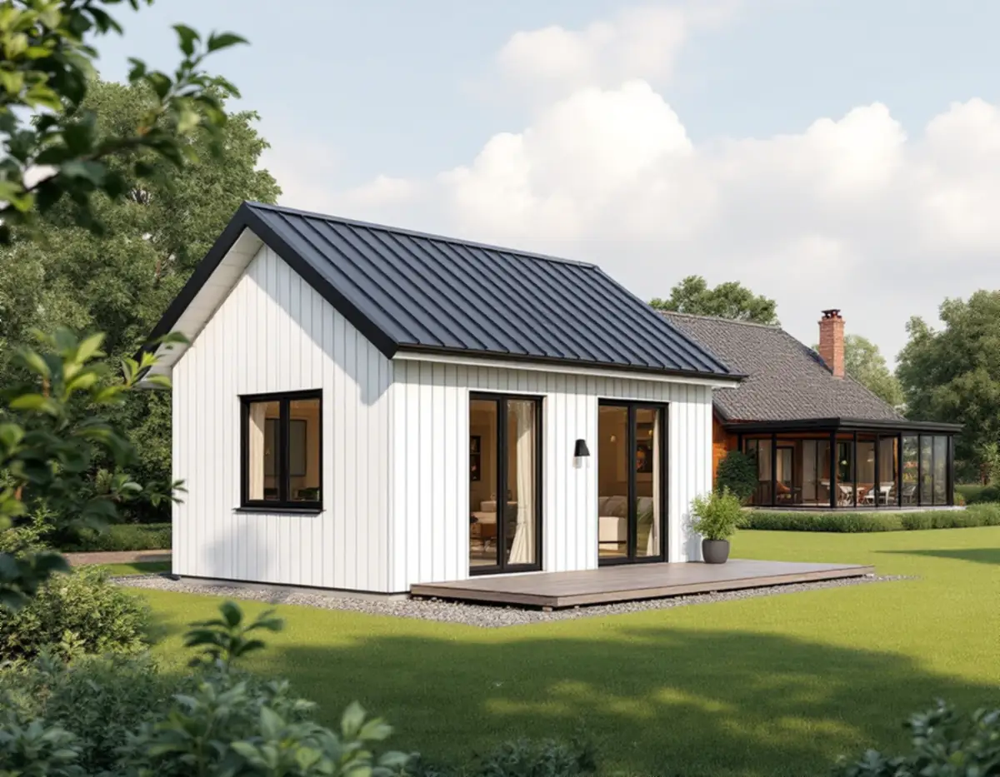
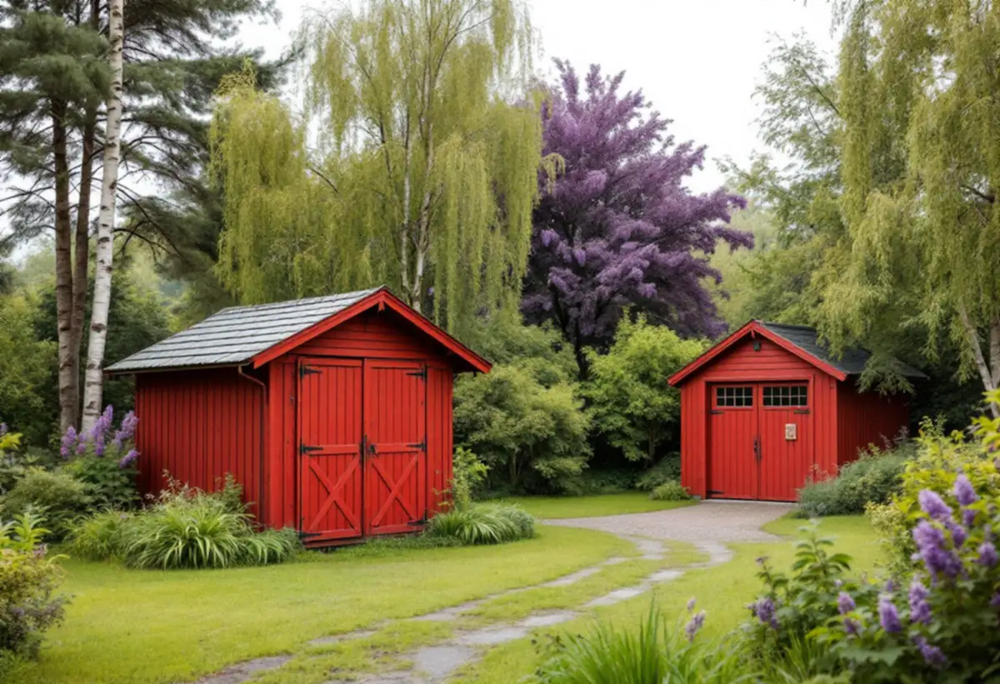
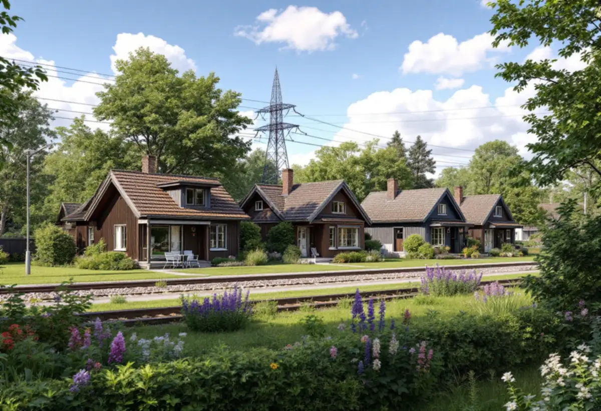

Kartan
Fastighetens klassning i Stadsmuseets karta kontrolleras.
Spånga växte upp som stationssamhälle vid järnvägen, och villaområdena Solhem, Bromsten, Flysta och Sundby har stora skillnader i tomter och regler. Geal Entreprenad AB kontrollerar kartan, spåren och gränserna för din tomt och bygger sedan komplementbostadshuset nyckelfärdigt.

Stadens vägledning Varsam utveckling av småhus- och villaområden berättar hur små stationssamhällen uppstod när järnvägen byggdes ut, och hur några av dem, till exempel Spånga, fick status som municipalsamhällen med egen administration. Vägledningen räknar Solhem, Bromsten, Flysta och Sundby till villastäderna. I Solhem fanns stora tomter där bara en tiondel av tomten fick bebyggas.
Områdesfakta för 2025 visar hur mycket småhus det finns: 1 946 småhus med äganderätt i Solhem, 916 i Bromsten, 657 i Flysta och 525 i Sundby. På de stora, äldre tomterna finns ofta plats för ett gårdshus – men platsen måste också klara reglerna för lov och gränser.

I vägledningens tabell är Solhem markerat som kulturhistoriskt värdefull miljö, medan Bromsten, Flysta och Sundby saknar markering. Det avgörande är ändå hur just din fastighet är klassad. Ligger den inom en grön eller blå ring i Stadsmuseets klassificeringskarta, eller är villan markerad med blått eller grönt, krävs bygglov även för ett hus som annars hade varit lovfritt. Gul eller grå markering kräver inget lov i sig.
I en värdefull miljö prövar byggnadsnämnden hur huset placeras och ser ut. Vi ritar då ett gårdshus som underordnar sig villan, med enkel form, träpanel och en takvinkel som hör hemma i villastaden. Vägledningen beskriver villastädernas fritt liggande hus i trädgårdslandskap med respektavstånd till tomtgränsen och gröna förgårdar mot gatan – ett gårdshus längst in på tomten, bakom villan, stör den bilden minst. Står fastigheten på en streckad yta i kartan är miljön inte inventerad, och då kan Stadsmuseet behöva göra en bedömning innan vi vet om lov krävs.
Lagen och staden ställer ett krav som många missar: ett lovfritt komplementbostadshus ska stå minst 30 meter från närmaste järnvägsspår. Vill du bygga närmare behövs ett medgivande från infrastrukturförvaltaren, annars blir det en bygglovsansökan. I Spånga, där villaområdena växte upp kring stationen, ligger en del tomter tillräckligt nära spåren för att regeln ska spela roll.
Vi mäter avståndet från husets tänkta läge till spåret innan vi ritar. Samtidigt kontrollerar vi avståndet 4,5 meter till gränserna mot grannar, samfällighet och allmän plats. Där inte heller det går att klara behövs skriftliga medgivanden med situationsplan.
Huset får vara högst 30,0 kvadratmeter byggnadsarea och 4,0 meter i nock, och det ska vara mindre än villan. Alla lovfria komplementbyggnader och komplementbostadshus på tomten får tillsammans vara högst 45,0 kvadratmeter, och gamla friggebodar och attefallshus räknas in. På de stora tomterna i Solhem är det ofta gamla förråd och garage som tar en del av potten.
Vatten, avlopp, ventilation och eldstad ska anmälas, och installationerna får göras först efter startbesked. Stockholm Vatten och Avfall vill ha en servisanmälan med ritning, och den nya vattenledningen ska kopplas efter mätaren i villan. Ett gårdshus långt in på en stor tomt kan få sämre vattentryck, så avståndet till förbindelsepunkten är värt att räkna på. Lagtexten är sammanfattad i reglerna för attefallshus.

Fastighetens klassning i Stadsmuseets karta kontrolleras.
Spår, gränser och befintliga gårdshus mäts in vid ett gratis platsbesök.
Vi räknar ut hur mycket av de 45 kvadratmetrarna som återstår.
Installationer anmäls; bygglov söks där det krävs.
Grund, stomme, tak och installationer fram till nyckelfärdigt.
Huset tas i bruk när slutbeskedet har kommit.
Skatteverket skriver att det inte går att få rotavdrag för att bygga en helt ny bostad, och inte heller för ett nytt hus, en friggebod, ett garage eller en liknande fristående byggnad. Ett komplementbostadshus står fritt på tomten, så kostnadsförslaget för huset räknas utan avdrag.
Husets storlek, kök och badrum, om bygglov behövs, grundläggning, ledningarnas längd på en stor tomt och om gamla förråd ska rivas för att ge plats i potten. Efter ett gratis platsbesök får du ett skriftligt kostnadsförslag.
Komplementbostadshus på tomten.
Attefallshus →Takbyte, takbesiktning och plåtarbeten.
Takläggare i Spånga →Solhem, Bromsten, Flysta och Sundby.
Takrenovering i Spånga →Äldre villor, duschplats och bostadsanpassning.
Badrumsrenovering i Spånga →Riva och bygga nytt hus.
Byggföretag i Spånga →Bättra eller måla om hela villan.
Fasadmålning i Spånga →Trävillor och gruppbyggda radhus.
Fasadrenovering i Spånga →Villor, verandor och nya öppningar.
Fönsterbyte i Spånga →Villorna i Solhem.
Fönsterrenovering i Spånga →Massivt, lamell, fanér eller laminat.
Golvläggare i Spånga →Breda originalgolv och patina.
Golvslipning i Spånga →Solhem, villastäder och kök i flera lager.
Köksrenovering i Spånga →Solhems färgskala och villorna kring stationen.
Målare i Spånga →Villatak, rännor och stuprör.
Plåtslagare i Spånga →Väggar, vindar och verandor i villastäderna.
Snickare i Spånga →Solceller, radarn och Solhem.
Takbyte i Spånga →Tapet som passar husets tid.
Tapetsering i Spånga →Villastäderna, tomterna och gatan.
Tillbyggnad i Spånga →Villastäderna, stommen och ventilationen.
Totalrenovering i Spånga →